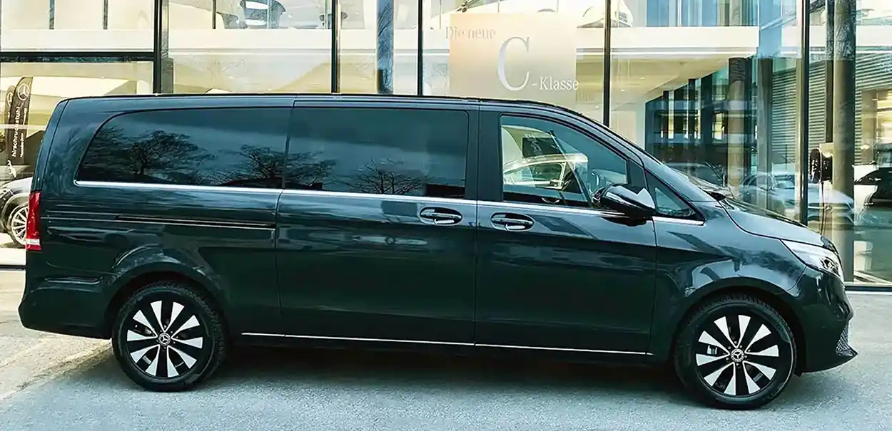
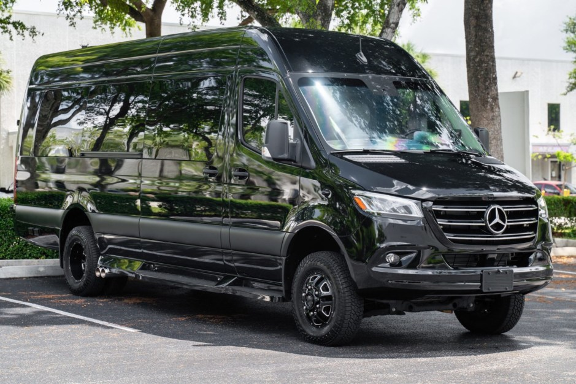
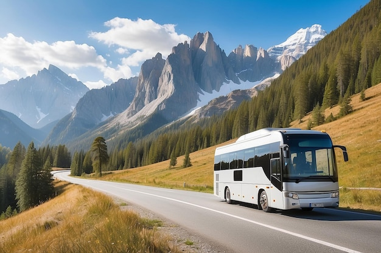

Standard / Éco
Nyon · Réservation à l'avance garantie
Chauffeur privé,
Chauffeur privé,
flotte complète.
Local Taxi dessert Nyon et les communes environnantes : transfert Aéroport de Genève, courses locales et chauffeur à la demande. Six classes de véhicules, un chauffeur professionnel pour chaque trajet, 24h/24, 7j/7.
24/7Toujours disponibles
GVAForfaits aéroport Genève
20+Communes à proximité
6Classes de véhicules
Nos prestations
Un chauffeur pour chaque trajet
Toujours disponibles, chauffeurs professionnels, assurances, prix clairs et forfaits sans surprise.
Nos véhicules
Obtenir un devis →
Toute notre flotte
Affaires

Première Classe

Van Confort

Minibus

Autocar

24/7Toujours disponibles
SécuritéChauffeurs pro, assurances
Prix clairsForfaits, pas de surprise
Sur mesure★★★★★
À vos besoins
À proximité
Nyon et ses environs
Où que vous soyez dans la région, nous venons vous chercher.
Nyon
Rolle
Versoix
Saint-Cergue
Arzier-Le Muids
Aubonne
Gland
Givrins
Mies
Coppet
Founex
Trélex
Duillier
Dully
Begnins
Genolier
Gimel
Crassier
Gingins
La Rippe
Bassins
Prangins
Bursinel
Ils nous ont fait confiance
Ce que nos clients disent
« Service excellent ! Ponctuel, poli, voiture impeccable. »+
— Pierre Dubois, voyageur d'affaires
« Transfert aéroport parfait, chauffeur serviable, je recommande. »+
— Marie Laurent, touriste
« Le meilleur taxi de la région, fiable et confortable. »+
— Thomas Martin, client régulier
Faut-il réserver à l'avance ?+
Commande immédiate possible, ou réservation à l'avance garantie — comme vous préférez. Service disponible 24h/24, 7j/7.
Proposez-vous des forfaits pour l'Aéroport de Genève ?+
Oui, des forfaits aéroport à prix fixe sont disponibles, sans surprise sur la facture.
Quels véhicules proposez-vous pour les groupes ?+
Sprinter 8 à 16 places pour les petits groupes, et autocar 16 à 49 places pour les groupes plus importants — idéal pour événements et excursions.
Prêt à réserver votre course ?
Commande immédiate ou réservation à l'avance, notre équipe répond 24h/24, 7j/7.